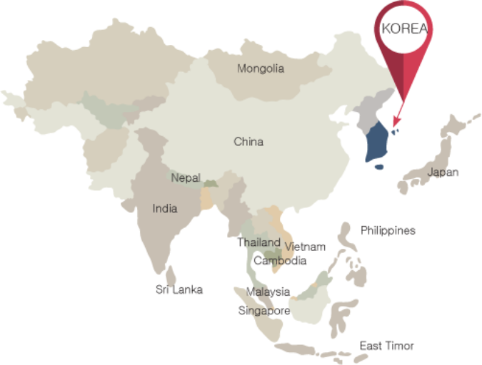

Geography (Location & Area)
South Korea is located in Asia on the Korean Peninsula; it measures a total of 100,188.1 ㎢ and takes
up 45% of
the Korean Peninsula, which is a total of of 221,000 ㎢. The total area of the peninsula includes all
of the
Korean Peninsula and its annexed islands, occupied by both South and North Korea. The Korean
Peninsula is
slightly larger than Cambodia (181,035 ㎢), and about 2/3 the size of the Philippines (300,000 ㎢),
Vietnam
(331,210 ㎢), and Japan (377,915 ㎢). The Korean Peninsula, on which South Korea and North Korea are
located,
neighbors China to the northwest with Amnokgang (River) as its borderline, and China and Russia to
the northeast
with Dumangang (River) as its borderline. The peninsula is bordered by the Yellow Sea in the west,
the East Sea
in the east, and the South Sea in the south. The southern and western parts of Korea are plains,
while the
eastern and the northern parts are mountainous. The highest mountain in Korea is Baekdusan (2,744m).
Gaemagowon,
which is in the northern part of Korea, is called "the Roof of Korea," and the Taebaek Range located
on the east
coast is called “Baekdudaegan”. Korea's best- known islands include Jeju Island, Geoje Island, Jin
Island and
Ulleung Island. Jeju Island and Ulleung Island were formed by volcanic activities. The west coast
and the south
coast of Korea are rias coasts, and there is a large tidal range. Source: Ministry of Land,
Infrastructure and
Transport
HISTORY OF SOUTH KOREA

After Japan's defeat in the Pacific War in 1945, the Korean region, which was part of Japan's territory, was
occupied by American and Soviet forces. In 1948, with the end of the U.S. military government, South Korea
declared its independence from Japan as the Republic of Korea. In 1952, when Japan approved the independence
of the Korean region under the San Francisco Peace Treaty, it became a completely independent and sovereign
nation under international law. The unconditional surrender of Japan led to the division of Korea into two
occupation zones (similar to the four zones in Germany), with the United States administering the southern
half of the peninsula and the Soviet Union administering the area north of the 38th parallel. This division
was meant to be temporary (as was in Germany) and was first intended to return a unified Korea back to its
people after the United States, United Kingdom, Soviet Union, and China could arrange a single government
for the peninsula.
The two parties were unable to agree on the implementation of a Joint Trusteeship over Korea because of 2
different opinions.[2] This led in 1948 to the establishment of two separate governments with the two very
opposite ideologies; the Communist-aligned Democratic People's Republic of Korea (DPRK) and the West-aligned
First Republic of Korea – each claiming to be the legitimate government of all of Korea. On 25 June 1950,
the Korean War broke out. After much destruction, the war ended on 27 July 1953, with the 1948 status quo
being restored, as neither the DPRK nor the First Republic had succeeded in conquering the other's portion
of the divided Korea. The peninsula was divided by the Korean Demilitarized Zone and the two separate
governments stabilized into the existing political entities of North and South Korea.
South Korea's subsequent history is marked by alternating periods of democratic and autocratic rule.
Civilian governments are conventionally numbered from the First Republic of Syngman Rhee to the contemporary
Sixth Republic. The First Republic, arguably democratic at its inception (though preceded by major
anti-communist and anti-socialist purges), became increasingly autocratic until its collapse in 1960. The
Second Republic was strongly democratic but was overthrown in under a year and replaced by an autocratic
military regime. The Third, Fourth, and Fifth Republics were nominally democratic, but are widely regarded
as the continuation of military rule.[3] With the current Sixth Republic, the country has gradually
stabilized into a liberal democracy.
INFORMATION OF KOREA UNIVERSITY
.webp)
City: Seoul
Meaning: The word ‘Seoul’ (서울) is the name of the capital of South Korea. Next to it, you will see the word
you just learned, ‘Daehakyo’ (대학교).
You have most likely heard about this University as it is the most famous and prestigious in the country.
Founded in 1946, Seoul National University (SNU) has always been on the list of Top Universities in South
Korea.
Among others, it is recognized as the most prestigious place in which many young people want to study, often
working their hardest to pass the ‘Suneung College Scholastic Ability Test’ after graduating from high
school. This test is the most difficult exam in the world, and it marks the students’ careers, work, and
even personal life. Without a high score in this exam, there is no chance of being accepted into Seoul
National University, as it is the most competitive in the country.
However, you can take a breath now, as it is a completely different story for foreigners. As an
international student, you don’t have to take that exam to be accepted.
But! That doesn’t mean it gets any easier during the admission process. SNU has a very low acceptance rate,
from 15% to 20%, which means you need to qualify for the excellence that the admission panel is looking for
in its students.
You will have to prove your competency as an academic with a high GPA, an admirable study plan, and a
personal statement. In addition, you need to back up your application with quality letters of
recommendation, a quality portfolio, if applicable, and any other achievements that you can mention to
impress the admission panel.
According to my friends who have studied at Seoul National University, it is indeed much easier for
foreigners to be admitted to this Institute compared to Koreans. But it doesn’t mean that you can get in
easily, as it is still pretty tough.
Also, if you decide to study here, you can also rest assured that many courses are taught in English,
especially in the engineering and business departments. However, you can always take Korean language courses
on the campus to increase your level of proficiency.
#2 Korea Advanced Institute Of Science & Technology — KAIST (한국과학기술원 — Hanguk Gwahak Gisurwon)
üìç Location: Seoul
üí∏ Average tuition for a semester: $4,600-$5,800
üè† Cost of living: $1,100-$1,600
üåç QS World Ranking: 29th
Considered the Harvard of South Korea, Seoul National University ranks 29th in the world for its academic
programming. If attending a top-notch university with an international reputation is important to you then
Seoul National University will be a great fit.
SNU attracts the best talent from around Korea and the world, including its professors. The university
estimates that nearly 97% of the faculty members have doctoral degrees from prestigious global universities.
Graduates of SNU have great job prospects with many going on to be CEOs and supreme court judges in Korea. A
study abroad semester or year at SNU will be sure to make your resume stand out.

City: Seoul
Meaning: The word ‘Seoul’ (서울) is the name of the capital of South Korea. Next to it, you will see the
word you just learned, ‘Daehakyo’ (대학교).
You have most likely heard about this University as it is the most famous and prestigious in the
country. Founded in 1946, Seoul National University (SNU) has always been on the list of Top
Universities in South Korea.
Among others, it is recognized as the most prestigious place in which many young people want to study,
often working their hardest to pass the ‘Suneung College Scholastic Ability Test’ after graduating from
high school. This test is the most difficult exam in the world, and it marks the students’ careers,
work, and even personal life. Without a high score in this exam, there is no chance of being accepted
into Seoul National University, as it is the most competitive in the country.
However, you can take a breath now, as it is a completely different story for foreigners. As an
international student, you don’t have to take that exam to be accepted.
But! That doesn’t mean it gets any easier during the admission process. SNU has a very low acceptance
rate, from 15% to 20%, which means you need to qualify for the excellence that the admission panel is
looking for in its students.
You will have to prove your competency as an academic with a high GPA, an admirable study plan, and a
personal statement. In addition, you need to back up your application with quality letters of
recommendation, a quality portfolio, if applicable, and any other achievements that you can mention to
impress the admission panel.
According to my friends who have studied at Seoul National University, it is indeed much easier for
foreigners to be admitted to this Institute compared to Koreans. But it doesn’t mean that you can get in
easily, as it is still pretty tough.
Also, if you decide to study here, you can also rest assured that many courses are taught in English,
especially in the engineering and business departments. However, you can always take Korean language
courses on the campus to increase your level of proficiency.
#2 Korea Advanced Institute Of Science & Technology — KAIST (한국과학기술원 — Hanguk Gwahak Gisurwon)
City: Daejon (Daejeon Innopolis District)
Meaning: The word ‘한국’ (Hanguk) is the name of the country in the Korean language. Gwahakk Gisurwon
(과학기술원) means ‘institute of science and technology.’
It was founded in 1971 in South Korea as the Korea Advanced Institute of Science (KAIS), later merging
technology to become the Institute of Science and Technology that it is today (KAIST). The purpose of
this Institute from the beginning has been to increase the number of professional and talented
scientists and engineers in the country, having the best structure of graduate and undergraduate
education in Korea.
The United States Agency for International Development had a strong impact on the foundation of this
institution, as well as the Korean president of that time, who supported the idea.
According to KAIST’s history written on their website, the people who designed the academic scheme were
Frederick E. Terman, founder of Silicon Valley and ex-president of Stanford University, with Chung
Geum-mo, a renowned professor at the Polytechnic Institution of Brooklyn.
So is this a good choice for international students? For sure! If you are looking for a science and
technology university to study abroad, this is one of the best options.
But is it hard to get admission as an international student? Out of all the universities, this is one of
the hardest to get into, but similar to SNU, the situation differs when it comes to foreigners. KAIST is
interested in having potentially great talents studying on their campus, and so they offer many
scholarships for students who come from abroad.
#3 Sungkyunkwan University — SKKU (성균관대학교 — Seonggyungwan Daehakgyo)
City: Seoul